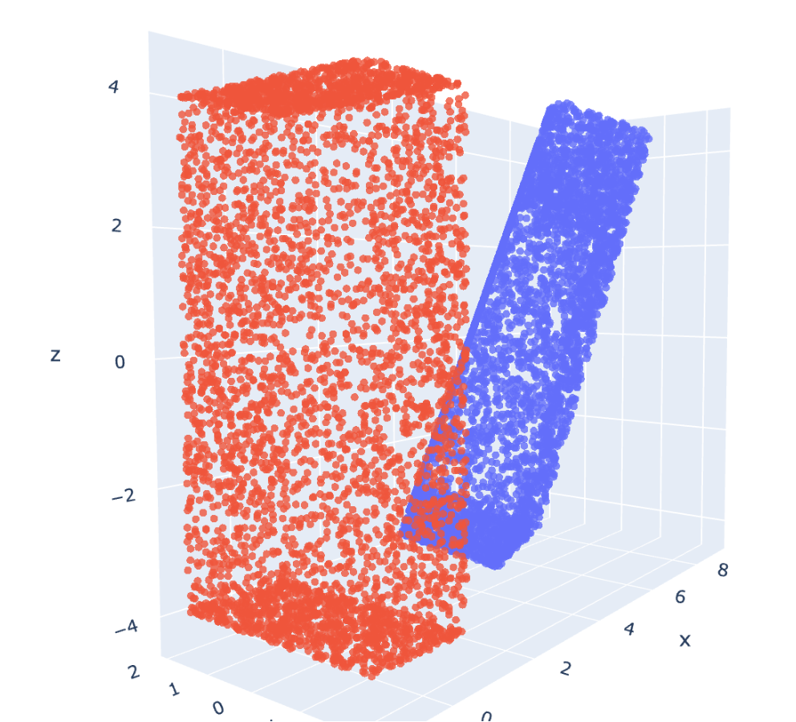

Ligand overlay 2: aligning principal moments of inertia
See Part 1 - quaternions
Notebook on github - Step 2 aligning along PMI

In most docking and ligand-overlay techniques, the loss function is non-convex with many local minima. That means it (might be) inefficient to start from random orientations/translations when searching for the best position. To reduce the search time, for example, UCSF DOCK evaluates ligands at pre-calulated points in the binding site that are likely to hold a ligand atom, assuming that the regions in empty space are unlikely to be even close to optimal. AutoDock-based approaches, including Vina/Smina, appear to use a box-shaped boundary and search across the whole volume. This is a deliberate trade-off - DOCK aims to be fast at the cost of false negatives, while AutoDock aims to identify the best pose for any ligand, at the cost of speed.
For ligand-overlay, it looks like Blaze checks lots of pre-calculated points, like DOCK would. ROCS begings by aligning the two molecules along the coordinate axes. Both make sense in that, a priori we know there can't be good volume overlap if the ligands are far away or pointing along different axes (contrast to docking, where the discovery of new binding pockets is a potential outcome, although this is not consistently validated). Later we will deal with the case of aligning part-molecules like fragments.
The best way to do the initial alignment à la ROCS is by aligning the "principal moments of inertia" to the x,y,z axes. A moment of inertia is a physics measurement that, intuitively, describes the amount of push you would need to rotate an object about it's centre of mass in different directions. Rotating an object along the short axis is easier, since less mass gets displaced.
Molecules have mass but we don't care about physical properties - the moment of inertia is just a surrogate coarse descriptor for shape by identifying the 'long' axis.. Performing a principal component analysis on the moment of inertia tells us which axis is "longest" and which is "shortest". Then, one can just apply some geometry formulae to align the long axis along one of the coordinate axes.
One complication is that a molecule can be aligned along the PMIs in any of four ways - corresponding to 180 degree rotations of the 1st and 2nd principal axis. It's not six, because the third principal axis is orthogonal to the previous two, meaning once the first two are known the 3rd is automatically defined. This can be dealt with later, but for example in ROCS they just start from all four.
The outcome of this all is demonstrated in the picture above. Calculating the PMI of a long monolith-shaped object (blue) allows us to ensure it begins from a logical starting point (red) for comparison to other shapes. See the notebook above for more details and the code.